In the ever changing world of retail; one always has to keep one step ahead of the competition and to engage with its customers. One of the best ways
- Formulate a test
- Implement Test
- Evaluate results
- Adjust the test
- Try again.
These are all great ideas, but how do we truly watch tas things get better?
library(qcc)## Package 'qcc' version 2.7## Type 'citation("qcc")' for citing this R package in publications.library(xtable)
library(SixSigma)
library(qicharts)## qicharts will no longer be maintained. Please consider moving to qicharts2: https://anhoej.github.io/qicharts2/.Cause and Effect Diagrams
cManpower <- c("Recepcionist", "Record. Operator",
"Storage operators")
cMaterials <- c("Supplier", "Transport agency",
"Packing")
cMachines <- c("Compressor type",
"Operation conditions",
"Machine adjustment")
cMethods <- c("Reception", "Transport method")
cMeasurements <- c("Recording method",
"Measurement appraisal")
cGroups <- c("Manpower", "Materials", "Machines",
"Methods", "Measurements")
cEffect <- "Too high density"
cause.and.effect(
cause = list(Manpower = cManpower,
Materials = cMaterials,
Machines = cMachines,
Methods = cMethods,
Measurements = cMeasurements),
effect = cEffect)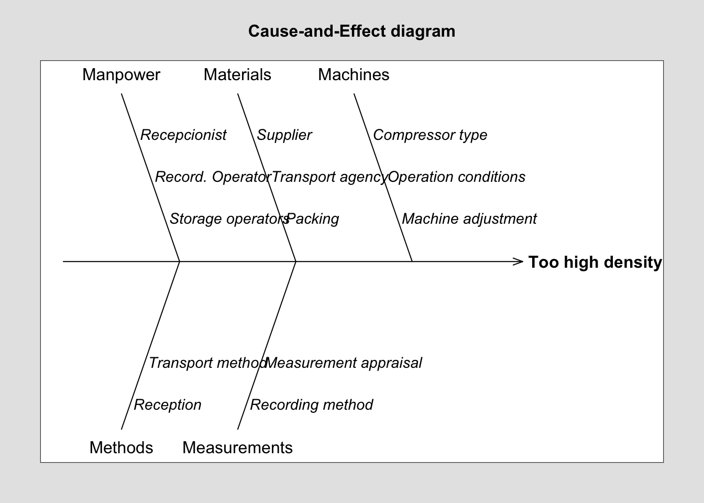
ss.ceDiag(
effect = cEffect,
causes.gr <- cGroups,
causes = list(cManpower, cMaterials, cMachines,
cMethods, cMeasurements),
main = "Cause-and-effect diagram",
sub = "Pellets Density")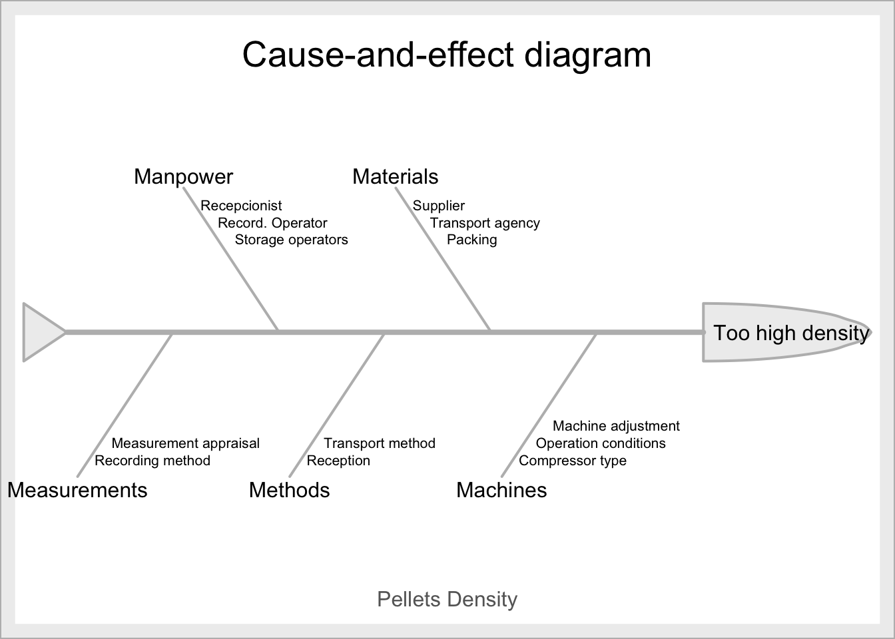
Check Sheet
data_checkSheet <- rbind(
data.frame(Group = "Manpower",
Cause = cManpower),
data.frame(Group = "Machines",
Cause = cMachines),
data.frame(Group = "Materials",
Cause = cMaterials),
data.frame(Group = "Methods",
Cause = cMethods),
data.frame(Group = "Measurements",
Cause = cMeasurements)
)
data_checkSheet$A_supplier <- NA
data_checkSheet$B_supplier <- NA
data_checkSheet$C_supplier <- NA## Group Cause A_supplier B_supplier C_supplier
## 1 Manpower Recepcionist NA NA NA
## 2 Manpower Record. Operator NA NA NA
## 3 Manpower Storage operators NA NA NA
## 4 Machines Compressor type NA NA NA
## 5 Machines Operation conditions NA NA NA
## 6 Machines Machine adjustment NA NA NA
## 7 Materials Supplier NA NA NA
## 8 Materials Transport agency NA NA NA
## 9 Materials Packing NA NA NA
## 10 Methods Reception NA NA NA
## 11 Methods Transport method NA NA NA
## 12 Measurements Recording method NA NA NA
## 13 Measurements Measurement appraisal NA NA NAControl Charts
pdensity <- c(10.6817, 10.6040, 10.5709, 10.7858,
10.7668, 10.8101, 10.6905, 10.6079,
10.5724, 10.7736, 11.0921, 11.1023,
11.0934, 10.8530, 10.6774, 10.6712,
10.6935, 10.5669, 10.8002, 10.7607,
10.5470, 10.5555, 10.5705, 10.7723)
myControlChart <- qcc(data = pdensity,
type = "xbar.one")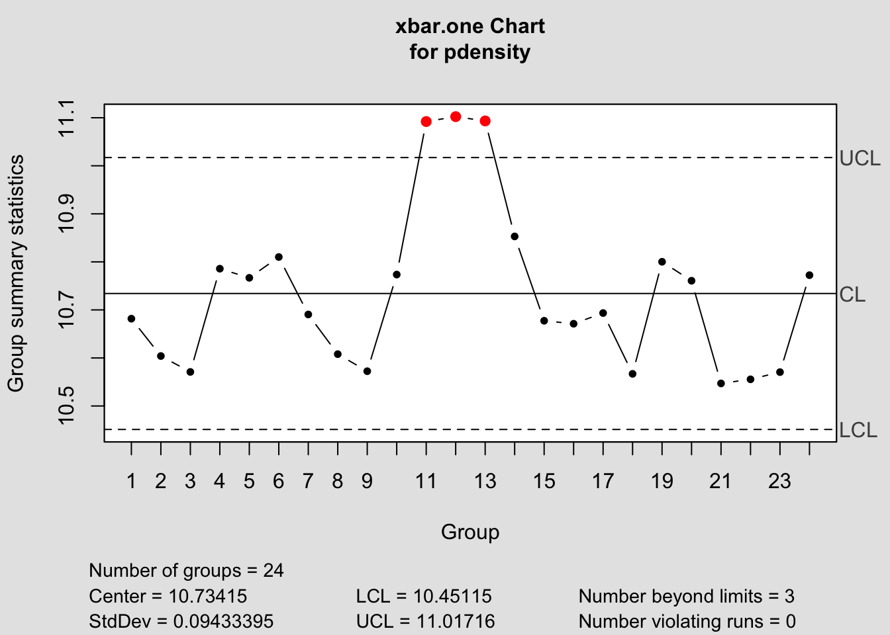
summary(myControlChart)##
## Call:
## qcc(data = pdensity, type = "xbar.one")
##
## xbar.one chart for pdensity
##
## Summary of group statistics:
## Min. 1st Qu. Median Mean 3rd Qu. Max.
## 10.54700 10.59610 10.69200 10.73415 10.78940 11.10230
##
## Group sample size: 1
## Number of groups: 24
## Center of group statistics: 10.73415
## Standard deviation: 0.09433395
##
## Control limits:
## LCL UCL
## 10.45115 11.01716Histogram
hist(pdensity)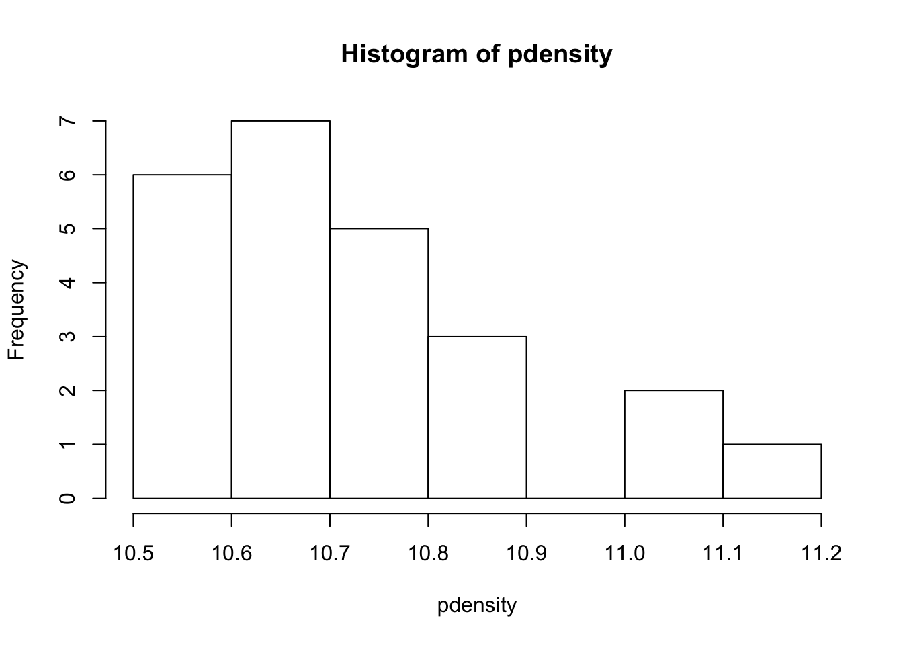
par(bg = "gray95")
hist(pdensity,
main = "Histogram of pellets density - Sample #25",
sub = "Data from ceramic process",
xlab = expression("Density (g"/"cm"^3*")"),
col = "steelblue",
border = "white",
lwd = 2,
las = 1,
bg = "gray")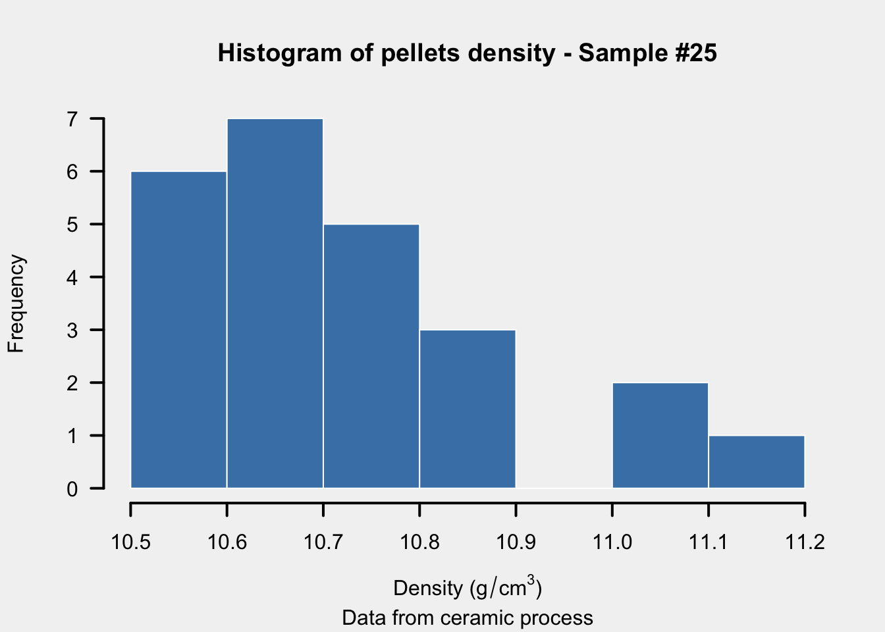
library(ggplot2)
ggplot(data = data.frame(pdensity),
aes(x = pdensity)) +
geom_histogram(fill = "seagreen",
colour = "lightgoldenrodyellow",
binwidth = 0.2) +
labs(title = "Histogram",
x = expression("Density ("*g/cm^3*")"),
y = "Frequency")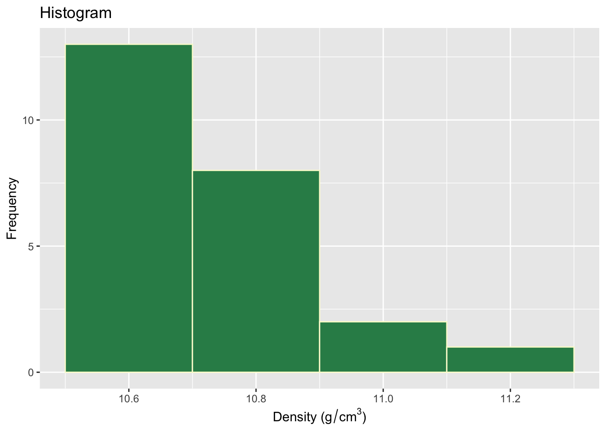 ## Pareto Chart
data_checkSheet$A_supplier <- c(2, 0, 0, 2, 1, 7, 1,
3, 6, 0, 1, 2, 0)
data_checkSheet$B_supplier <- c(0, 0, 1, 1, 2, 1, 12,
1, 2, 1, 0, 0, 1)
data_checkSheet$C_supplier <- c(0, 1, 0, 6, 0, 2, 2,
4, 3, 0, 1, 0, 2)
data_checkSheet$Total <- data_checkSheet$A_supplier +
data_checkSheet$B_supplier +
data_checkSheet$C_supplier
data_checkSheet## Group Cause A_supplier B_supplier C_supplier
## 1 Manpower Recepcionist 2 0 0
## 2 Manpower Record. Operator 0 0 1
## 3 Manpower Storage operators 0 1 0
## 4 Machines Compressor type 2 1 6
## 5 Machines Operation conditions 1 2 0
## 6 Machines Machine adjustment 7 1 2
## 7 Materials Supplier 1 12 2
## 8 Materials Transport agency 3 1 4
## 9 Materials Packing 6 2 3
## 10 Methods Reception 0 1 0
## 11 Methods Transport method 1 0 1
## 12 Measurements Recording method 2 0 0
## 13 Measurements Measurement appraisal 0 1 2
## Total
## 1 2
## 2 1
## 3 1
## 4 9
## 5 3
## 6 10
## 7 15
## 8 8
## 9 11
## 10 1
## 11 2
## 12 2
## 13 3data_pareto <- data_checkSheet[order(
data_checkSheet$Total,
decreasing = TRUE), ]
par(mar = c(8, 4, 4, 2) + 0.1)
barplot(height = data_pareto$Total,
names.arg = data_pareto$Cause,
las = 2,
main = "Pareto chart for total causes")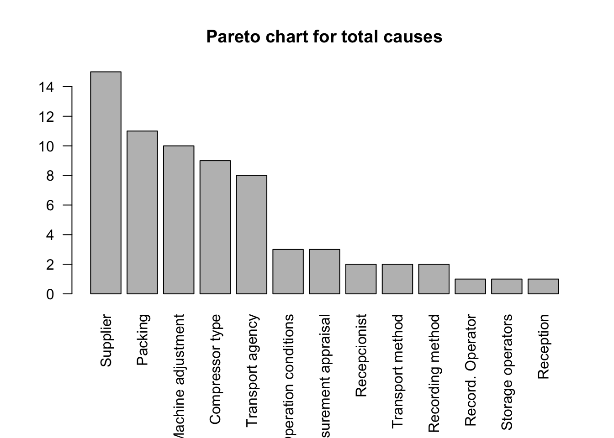
data_pareto2 <- data_pareto$Total
names(data_pareto2) <- data_pareto$Cause
pareto.chart(data = data_pareto2,
main = "Out-of-control causes")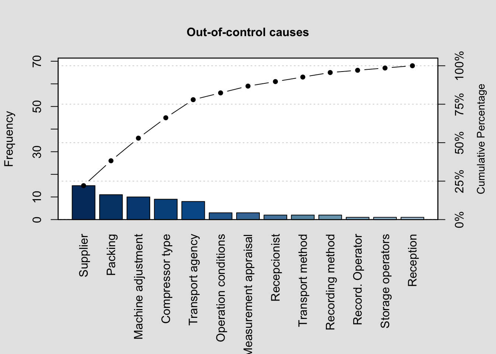
##
## Pareto chart analysis for data_pareto2
## Frequency Cum.Freq. Percentage Cum.Percent.
## Supplier 15.000000 15.000000 22.058824 22.058824
## Packing 11.000000 26.000000 16.176471 38.235294
## Machine adjustment 10.000000 36.000000 14.705882 52.941176
## Compressor type 9.000000 45.000000 13.235294 66.176471
## Transport agency 8.000000 53.000000 11.764706 77.941176
## Operation conditions 3.000000 56.000000 4.411765 82.352941
## Measurement appraisal 3.000000 59.000000 4.411765 86.764706
## Recepcionist 2.000000 61.000000 2.941176 89.705882
## Transport method 2.000000 63.000000 2.941176 92.647059
## Recording method 2.000000 65.000000 2.941176 95.588235
## Record. Operator 1.000000 66.000000 1.470588 97.058824
## Storage operators 1.000000 67.000000 1.470588 98.529412
## Reception 1.000000 68.000000 1.470588 100.000000library(qualityTools)## Loading required package: Rsolnp## Loading required package: MASS##
## Attaching package: 'qualityTools'## The following object is masked from 'package:stats':
##
## sigmaparetoChart(x = data_pareto2,
main = "Out-of-control causes")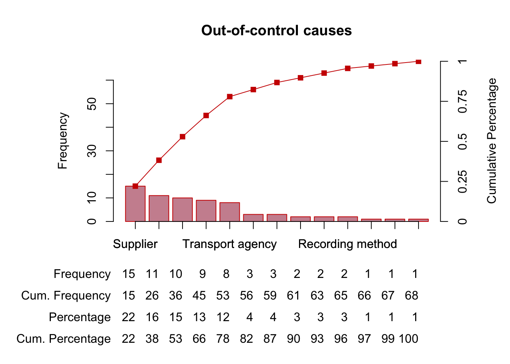
##
## Frequency 15 11 10 9 8 3 3 2 2
## Cum. Frequency 15 26 36 45 53 56 59 61 63
## Percentage 22.1% 16.2% 14.7% 13.2% 11.8% 4.4% 4.4% 2.9% 2.9%
## Cum. Percentage 22.1% 38.2% 52.9% 66.2% 77.9% 82.4% 86.8% 89.7% 92.6%
##
## Frequency 2 1 1 1
## Cum. Frequency 65 66 67 68
## Percentage 2.9% 1.5% 1.5% 1.5%
## Cum. Percentage 95.6% 97.1% 98.5% 100.0%##
## Frequency 15.00000 11.00000 10.00000 9.00000 8.00000 3.000000
## Cum. Frequency 15.00000 26.00000 36.00000 45.00000 53.00000 56.000000
## Percentage 22.05882 16.17647 14.70588 13.23529 11.76471 4.411765
## Cum. Percentage 22.05882 38.23529 52.94118 66.17647 77.94118 82.352941
##
## Frequency 3.000000 2.000000 2.000000 2.000000 1.000000
## Cum. Frequency 59.000000 61.000000 63.000000 65.000000 66.000000
## Percentage 4.411765 2.941176 2.941176 2.941176 1.470588
## Cum. Percentage 86.764706 89.705882 92.647059 95.588235 97.058824
##
## Frequency 1.000000 1.000000
## Cum. Frequency 67.000000 68.000000
## Percentage 1.470588 1.470588
## Cum. Percentage 98.529412 100.000000spreadvector <- rep(names(data_pareto2),times = data_pareto2)
paretochart(spreadvector)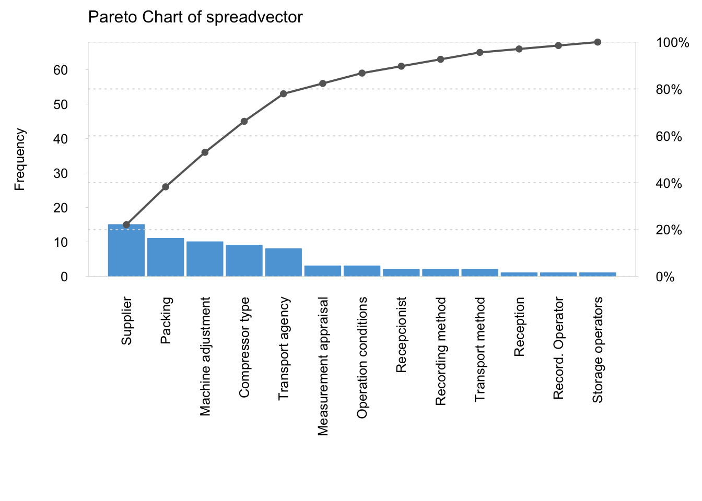
## Frequency Cumulative Frequency Percentage
## Supplier 15 15 22.058824
## Packing 11 26 16.176471
## Machine adjustment 10 36 14.705882
## Compressor type 9 45 13.235294
## Transport agency 8 53 11.764706
## Measurement appraisal 3 56 4.411765
## Operation conditions 3 59 4.411765
## Recepcionist 2 61 2.941176
## Recording method 2 63 2.941176
## Transport method 2 65 2.941176
## Reception 1 66 1.470588
## Record. Operator 1 67 1.470588
## Storage operators 1 68 1.470588
## Cumulative Percentage
## Supplier 22.05882
## Packing 38.23529
## Machine adjustment 52.94118
## Compressor type 66.17647
## Transport agency 77.94118
## Measurement appraisal 82.35294
## Operation conditions 86.76471
## Recepcionist 89.70588
## Recording method 92.64706
## Transport method 95.58824
## Reception 97.05882
## Record. Operator 98.52941
## Storage operators 100.00000x <- rep(LETTERS[1:9], c(256, 128, 64, 32, 16, 8, 4, 2, 1))
paretochart(x)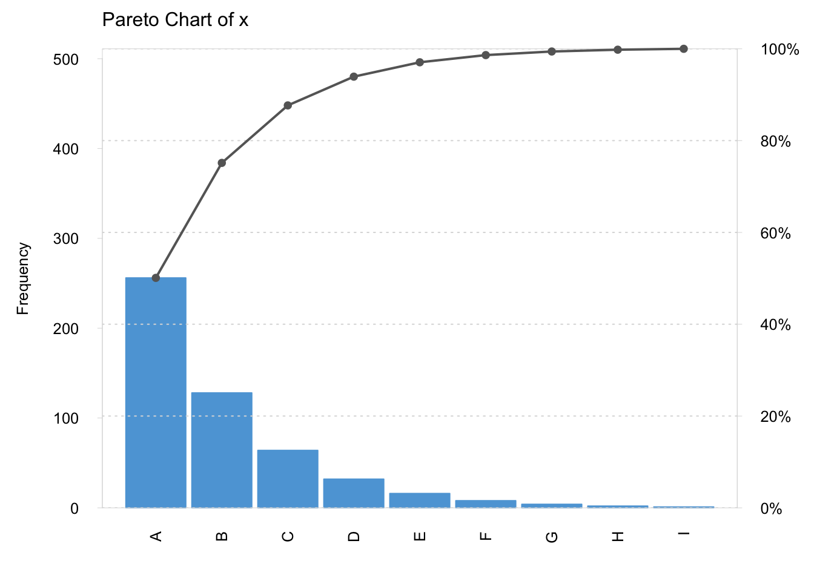
## Frequency Cumulative Frequency Percentage Cumulative Percentage
## A 256 256 50.0978474 50.09785
## B 128 384 25.0489237 75.14677
## C 64 448 12.5244618 87.67123
## D 32 480 6.2622309 93.93346
## E 16 496 3.1311155 97.06458
## F 8 504 1.5655577 98.63014
## G 4 508 0.7827789 99.41292
## H 2 510 0.3913894 99.80431
## I 1 511 0.1956947 100.00000Scatterplot
set.seed(1234)
ptemp <- - 140 + 15*pdensity + rnorm(24)
plot(pdensity ~ ptemp,
col = "gray40",
pch = 20,
main = "Pellets density vs. temperature",
xlab = "Temperature (Celsius)",
ylab = expression("Density ("*g/cm^3*")"))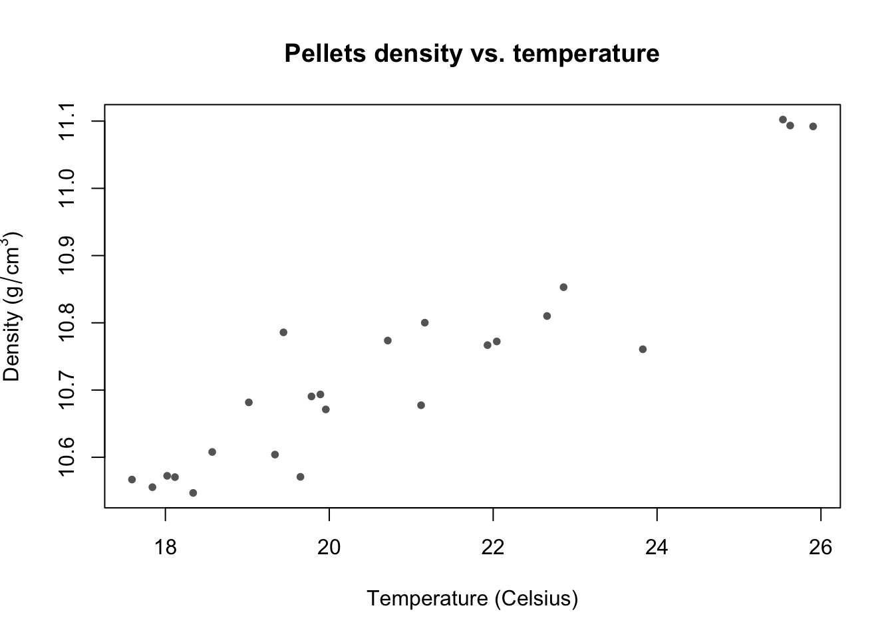 ##Stratification
psupplier <- rep(c("A", "B", "C"), each = 8)
boxplot(pdensity ~ psupplier,
col = "gray70",
xlab = "Supplier",
ylab = expression("Density ("*g/cm^3*")"),
main = "Box plots by supplier")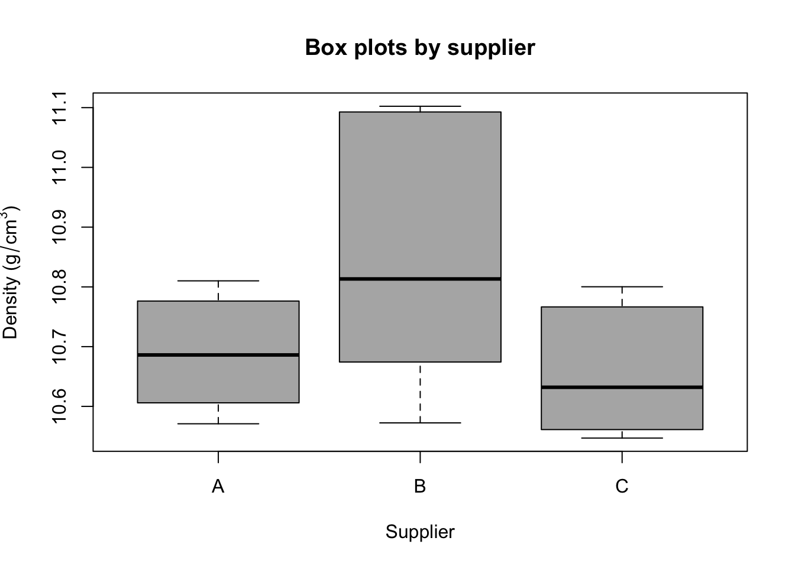
day1 <- c(0.821, 0.846, 0.892, 0.750, 0.773, 0.786,
0.956, 0.840, 0.913, 0.737, 0.793, 0.872)
day2 <- c(0.678, 0.742, 0.684, 0.766, 0.721, 0.785,
0.759, 0.708, 0.789, 0.732, 0.804, 0.758)
plates <- data.frame(thickness = c(day1, day2),
day = rep(c("Day1", "Day2"), each = 12))
plot(plates$thickness,
type = "b",
main = "Run Chart of Thickness",
las = 1,
ylab = "Thickness",
xlab = "Plate number",
pch = 20)
abline(h = median(plates$thickness),
lwd = 2)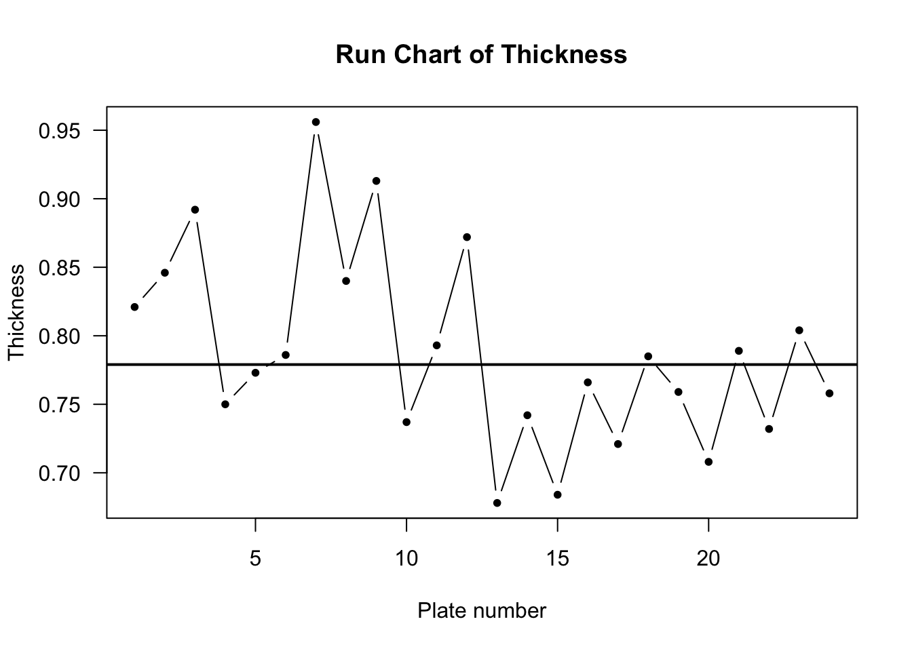
qic(thickness,
data = plates,
freeze = 12,
pre.text = "Day 1",
post.text = "Day 2",
runvals = TRUE)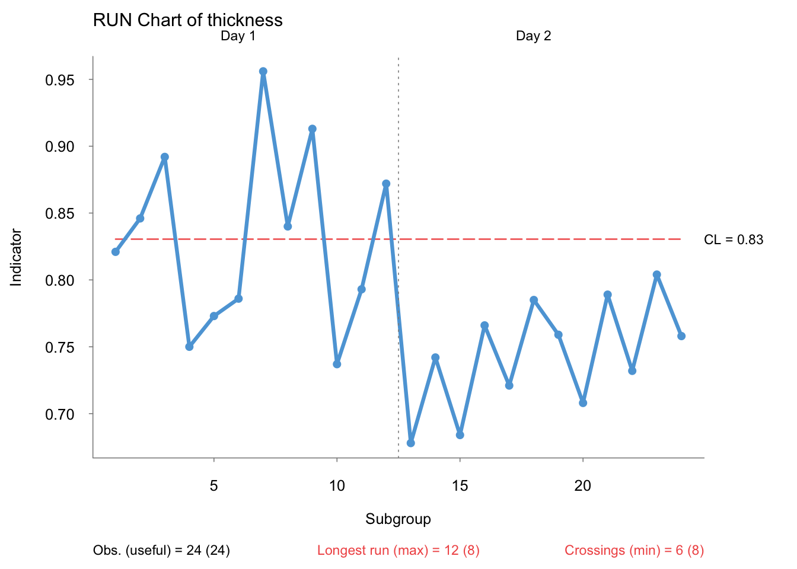